library(sf); library(tigris); library(dplyr); library(tidyr)
library(readr); library(readxl); library(janitor)
library(ggplot2); library(viridis); library(scales)
options(tigris_use_cache = TRUE)
sf::sf_use_s2(TRUE)An Introduction to GIS Methods for Environmental Pharmacoepidemiology
Open source CDC surveillance data.
No shapefile, no lat/long provided.
ARPSP_...csv — MDR E. coli resistance among HAIs, by state, 2024 → clinical outcomeBEAM_Dashboard_...csv — enteric pathogen isolates, by state, month, and source (animal/food/human/environmental), 2018– → exposure / surveillance-effort2024-SIR-ACH.xlsx — NHSN hospital SIR report, 2024 → used in the independent-practice sectionggplot2 + sf
tigrisdownloads state boundaries once, then caches.No internet?
Use the offline
cb_2025_us_state_20mshapefile instead (see instructor note).
Rows: 52
Columns: 2
$ state <chr> "Alaska", "Alabama", "Arkansas", "Arizona", "Califor…
$ percent_resistant <dbl> 3.4, 8.3, 10.8, 8.8, 17.3, 9.0, 14.4, 19.7, 10.5, 11…Semicolon-delimited; Year has thousands-separator commas — typical of real exports.
beam <- read_delim("../data/BEAM_Dashboard_-_Report_Data_20260804.csv",
delim = ";", show_col_types = FALSE) %>%
clean_names() %>%
mutate(year = as.numeric(gsub(",", "", year)))
valid_state_codes <- c(state.abb, "DC")
beam_env_clean <- beam %>%
filter(year == 2024, source_type == "Environment", pathogen == "Salmonella",
state %in% valid_state_codes) %>%
group_by(state) %>%
summarize(env_isolates = sum(number_of_isolates, na.rm = TRUE), .groups = "drop")Only ~20 states show up here, for 2024 alone.
Is that because Salmonella isn’t in the environment elsewhere — or because those states aren’t sampling it?
An “exposure” layer built from surveillance data always measures exposure and where people looked.
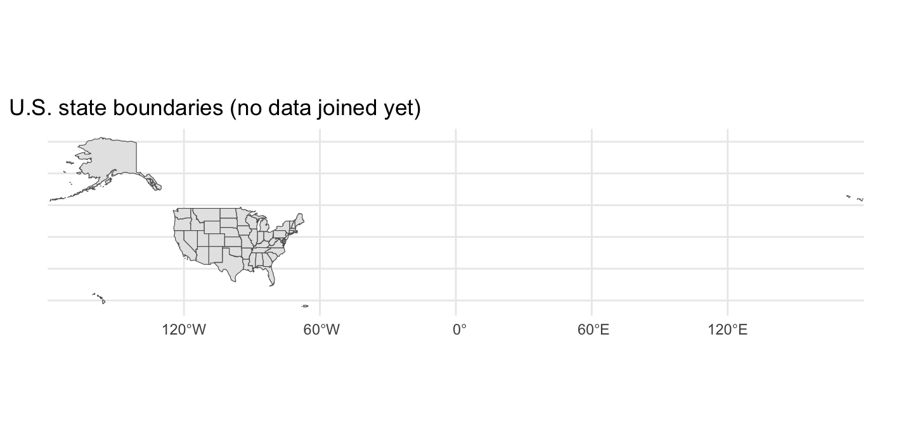
AK / HI / PR sit far outside the CONUS — they’d get cut off or shrink everything else. (tigris::shift_geometry() can inset them later — out of scope today.)
Coordinate Reference System (CRS) check-in: tigris gives unprojected NAD83. EPSG:5070 is equal-area, built for CONUS. Always ask: what CRS is this, and does it fit what I’m about to compute?
Shared key: full state name (ARPSP) / two-letter code (BEAM).
Always check your join before trusting a map:
name stusps
1 Wyoming WYA silent join failure (trailing space, “St.” vs “Saint”) is the #1 cause of a wrong-looking choropleth.
ggplot(map_data) +
geom_sf(aes(fill = percent_resistant), color = "white", linewidth = 0.15) +
scale_fill_distiller(palette = "YlOrRd", direction = 1, name = "% MDR\nE. coli") +
theme_void() +
labs(title = "Multidrug-resistant E. coli among HAIs, by state, 2024",
subtitle = "GREAT: continuous, red = higher resistance",
caption = "Source: ARPSP")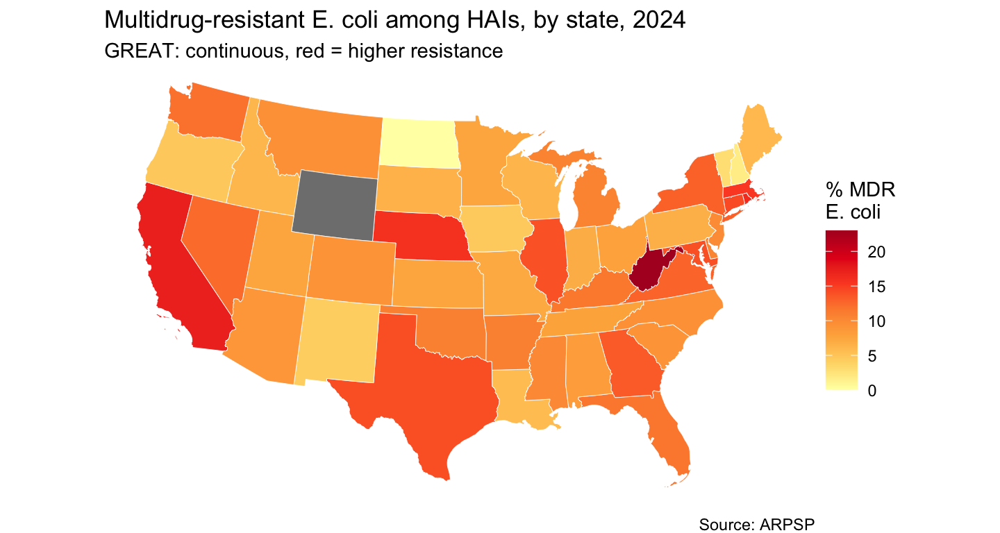
ggplot(map_data) +
geom_sf(aes(fill = env_isolates), color = "white", linewidth = 0.15) +
scale_fill_distiller(palette = "YlOrRd", direction = 1, name = "% MDR\nSalmonella") +
theme_void() +
labs(title = "Environmentally-sourced Salmonella isolates, by state, 2024",
subtitle = "CDC BEAM enteric bacteria surveillance",
caption = "Source: BEAM Dashboard")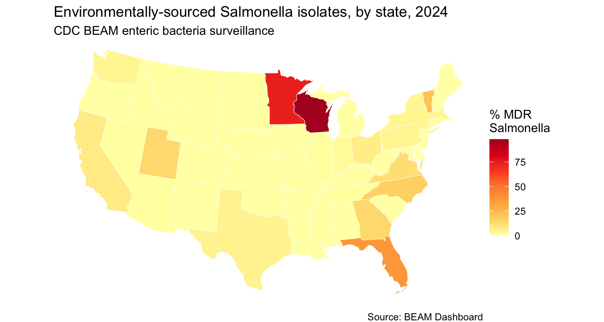
Lets plot the same variable (percent_resistant), using three different color decisions.
map_data_bad <- map_data %>%
mutate(resist_bin = cut(percent_resistant, breaks = c(0,5,10,15,25),
labels = c("0-4%","5-9%","10-14%","15%+"), include.lowest = TRUE))
ggplot(map_data_bad) +
geom_sf(aes(fill = resist_bin), color = "white", linewidth = 0.15) +
scale_fill_brewer(palette = "Set1", name = "% MDR\nE. coli") +
theme_void() + labs(subtitle = "Colors imply no order")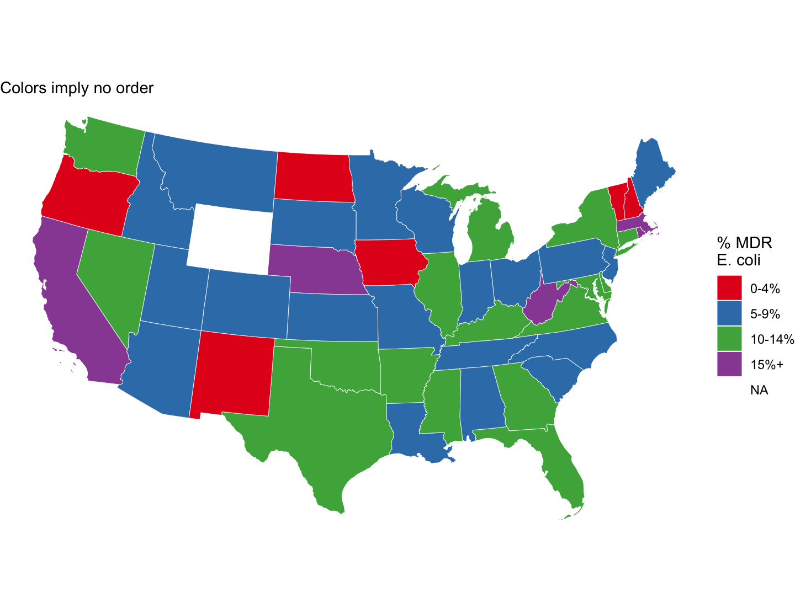
map_data_meh <- map_data %>%
mutate(resist_bin = cut(percent_resistant, breaks = c(0,20,40,60,80,100),
labels = c("0-19%","20-39%","40-59%","60-79%","80-100%"),
include.lowest = TRUE))
ggplot(map_data_meh) +
geom_sf(aes(fill = resist_bin), color = "white", linewidth = 0.15) +
scale_fill_manual(values = c("0-19%"="#FFFFB2","20-39%"="#FECC5C","40-59%"="#FD8D3C",
"60-79%"="#F03B20","80-100%"="#BD0026"),
name = "% MDR\nE. coli", drop = FALSE) +
theme_void() + labs(subtitle = "NOT SO GREAT: naive round-number bins")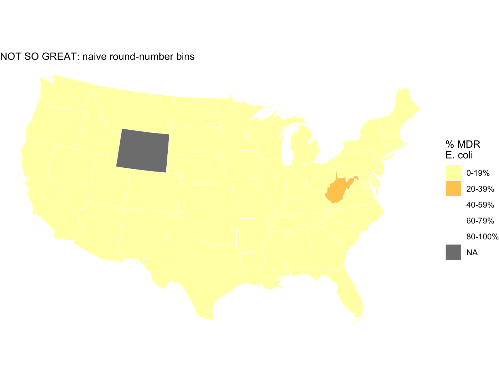
Which is better for your audience?
Classed, quantile breaks
qb <- quantile(map_data$percent_resistant, probs = seq(0,1,.2), na.rm = TRUE)
map_data %>%
mutate(bin = cut(percent_resistant, qb, include.lowest = TRUE,
labels = c("Lowest 20%","2nd","3rd","4th","Highest 20%"))) %>%
ggplot() + geom_sf(aes(fill = bin), color = "white", linewidth = 0.15) +
scale_fill_brewer(palette = "YlOrRd", name = NULL) + theme_void()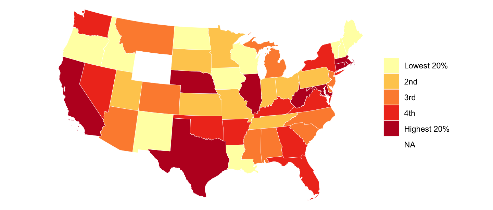
name
1 WyomingWyoming’s rate is suppressed in the source data — small states often are, to avoid re-identifying patients. This is a real, recurring feature of small-area public health data, not a cleaning mistake. Drop it, or impute deliberately — but say which, and why.
Most interesting environmental-pharmacoepi questions are about change. A small-multiples panel repeats the same map once per time period so the eye can compare directly.
beam_panel <- expand_grid(stusps = states_conus$stusps, year = 2018:2025) %>%
left_join(
beam %>% filter(source_type == "Environment", pathogen == "Salmonella",
year >= 2018, year <= 2025, state %in% valid_state_codes) %>%
group_by(state, year) %>%
summarize(isolates = sum(number_of_isolates, na.rm = TRUE), .groups = "drop"),
by = c("stusps" = "state", "year")
) %>%
mutate(isolates = coalesce(isolates, 0))
panel_sf <- states_conus %>% select(stusps, geometry) %>% left_join(beam_panel, by = "stusps")(We dropped 2026 — partial year would look like a artificial decline.)
ggplot(panel_sf) +
geom_sf(aes(fill = isolates), color = "white", linewidth = 0.05) +
facet_wrap(~ year, ncol = 4) +
scale_fill_distiller(palette = "YlOrRd", direction = 1, name = "Environmental\nSalmonella\nisolates",
limits = c(0, max(panel_sf$isolates))) +
theme_void(base_size = 9) +
theme(strip.text = element_text(face = "bold")) +
labs(title = "Environmentally-sourced Salmonella isolates by state, 2018-2025",
subtitle = "CDC BEAM enteric bacteria surveillance",
caption = "Source: BEAM Dashboard")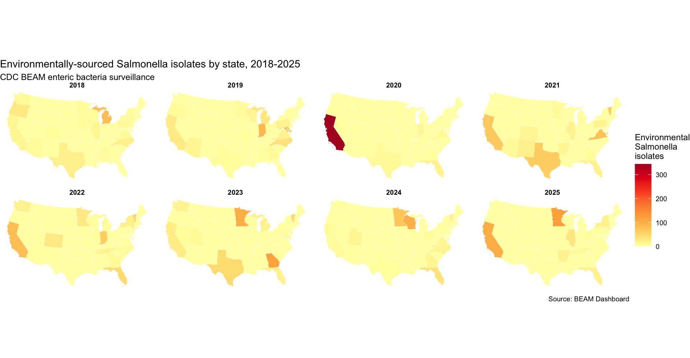
Every panel uses one color scale built from all 8 years combined.
Map each year with its own default scale instead, and a state with 5 isolates in a low year looks just as “dark” as one with 50 in a high year — same color, wildly different magnitude.
A shared scale is what makes a small-multiples panel an honest comparison, not eight unrelated pictures that happen to share an axis.
salm_source_totals <- beam %>%
filter(pathogen == "Salmonella", year >= 2018, year <= 2025, state %in% valid_state_codes) %>%
group_by(source_type) %>%
summarize(isolates = sum(number_of_isolates, na.rm = TRUE), .groups = "drop")
ggplot(salm_source_totals, aes(x = reorder(source_type, isolates), y = isolates)) +
geom_col(fill = "#440154FF") + coord_flip() +
scale_y_log10(labels = comma) +
labs(x = NULL, y = "Total isolates, 2018-2025 (log10 axis)",
title = "Salmonella isolates by source type") + theme_minimal()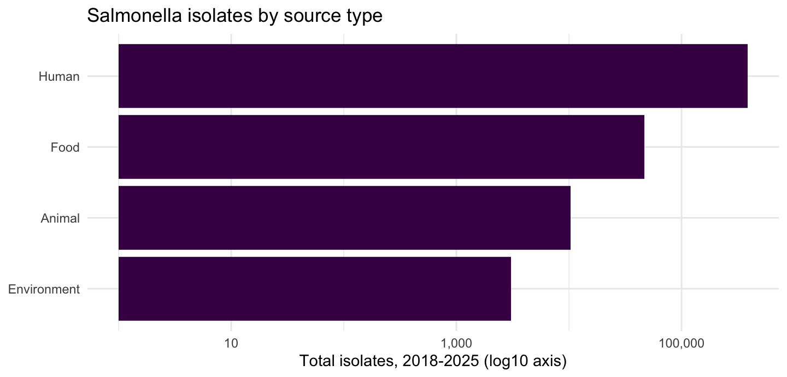
Human ≈ 387,000. Environment ≈ 3,000. Over 100× apart.
source_types <- c("Environment", "Animal", "Food", "Human")
salm_source_sf <- states_conus %>% select(stusps, geometry) %>%
left_join(
expand_grid(stusps = states_conus$stusps, source_type = source_types) %>%
left_join(beam %>% filter(pathogen == "Salmonella", year >= 2018, year <= 2025,
state %in% valid_state_codes) %>%
group_by(state, source_type) %>%
summarize(isolates = sum(number_of_isolates, na.rm = TRUE), .groups = "drop"),
by = c("stusps" = "state", "source_type")) %>%
mutate(isolates = coalesce(isolates, 0), source_type = factor(source_type, levels = source_types)),
by = "stusps")ggplot(salm_source_sf) +
geom_sf(aes(fill = isolates), color = "white", linewidth = 0.05) +
facet_wrap(~ source_type, nrow = 1) +
scale_fill_distiller(palette = "YlOrRd", direction = 1,
name = "Salmonella\nisolates\n(log10 scale)",
trans = "log1p",
breaks = c(0, 10, 100, 1000, 10000)) +
theme_void(base_size = 9) +
theme(strip.text = element_text(face = "bold")) +
labs(title = "Salmonella isolates by source type and state, 2018-2025 pooled",
subtitle = "CDC BEAM enteric bacteria surveillance",
caption = "Source: BEAM Dashboard. Color scale is log-transformed -- do not compare panels visually as if linear.")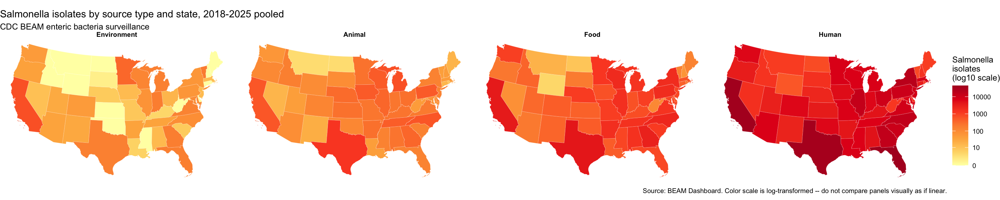
monthly_totals <- beam %>%
filter(source_type == "Environment", pathogen == "Salmonella",
year >= 2018, year <= 2025, state %in% valid_state_codes) %>%
group_by(month) %>% summarize(isolates = sum(number_of_isolates, na.rm = TRUE), .groups = "drop")
ggplot(monthly_totals, aes(x = factor(month), y = isolates)) +
geom_col(fill = "#21908CFF") + scale_x_discrete(labels = month.abb) +
labs(x = NULL, y = "Isolates, 2018-2025 pooled", title = "Monthly distribution") +
theme_minimal()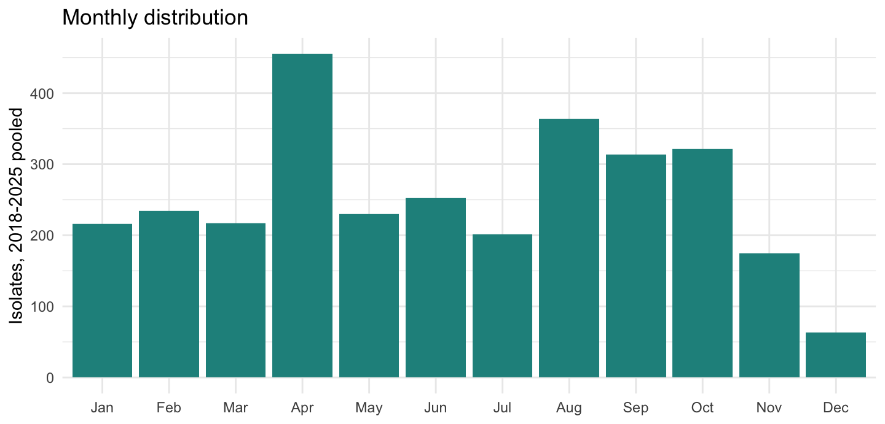
season_levels <- c("Winter (Dec-Feb)","Spring (Mar-May)","Summer (Jun-Aug)","Fall (Sep-Nov)")
season_sf <- states_conus %>% select(stusps, geometry) %>%
left_join(
expand_grid(stusps = states_conus$stusps, season = season_levels) %>%
left_join(beam %>% filter(source_type == "Environment", pathogen == "Salmonella",
year >= 2018, year <= 2025, state %in% valid_state_codes) %>%
mutate(season = case_when(
month %in% c(12,1,2) ~ "Winter (Dec-Feb)", month %in% c(3,4,5) ~ "Spring (Mar-May)",
month %in% c(6,7,8) ~ "Summer (Jun-Aug)", month %in% c(9,10,11) ~ "Fall (Sep-Nov)")) %>%
group_by(state, season) %>%
summarize(isolates = sum(number_of_isolates, na.rm = TRUE), .groups = "drop"),
by = c("stusps" = "state", "season")) %>%
mutate(isolates = coalesce(isolates, 0), season = factor(season, levels = season_levels)),
by = "stusps")ggplot(season_sf) +
geom_sf(aes(fill = isolates), color = "white", linewidth = 0.05) +
facet_wrap(~ season, nrow = 1) +
scale_fill_distiller(palette = "YlOrRd", direction = 1,
name = "Environmental\nSalmonella\nisolates",
limits = c(0, max(season_sf$isolates))) +
theme_void(base_size = 9) +
theme(strip.text = element_text(face = "bold")) +
labs(title = "Environmental Salmonella isolates by season, 2018-2025 pooled",
subtitle = "CDC BEAM enteric bacteria surveillance",
caption = "Source: BEAM Dashboard")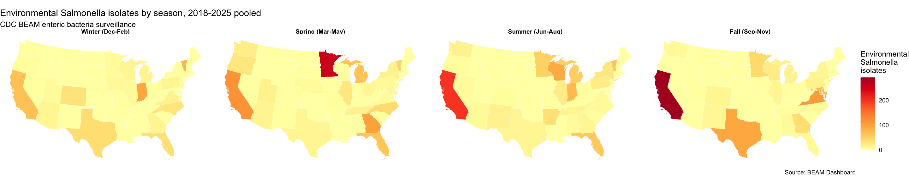
env_total <- beam_panel %>% group_by(stusps) %>%
summarize(env_isolates_total = sum(isolates), .groups = "drop")
plot_df <- map_data %>% st_drop_geometry() %>% left_join(env_total, by = "stusps")
ggplot(plot_df, aes(x = env_isolates_total, y = percent_resistant)) +
geom_point(size = 2, alpha = 0.7) +
geom_smooth(method = "lm", se = TRUE, color = "firebrick") +
labs(x = "Environmental Salmonella isolates, 2018-2025", y = "% MDR E. coli, 2024") +
theme_minimal()
Spearman's rank correlation rho
data: plot_df$env_isolates_total and plot_df$percent_resistant
S = 17350, p-value = 0.6938
alternative hypothesis: true rho is not equal to 0
sample estimates:
rho
0.05831997 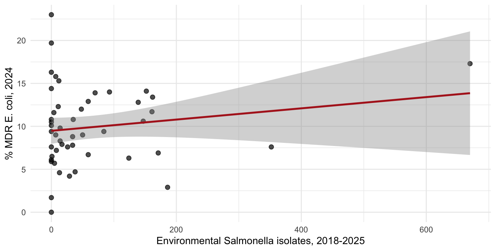
Ecological fallacy — even a state-level correlation tells you nothing about an individual patient’s exposure-outcome link.
MAUP (Modifiable Areal Unit Problem) — aggregate to counties, HHS regions, or watersheds instead of states, and both the magnitude and direction could change, with zero change in underlying reality.
If you designed a real study on this question: what exposure variable, at what spatial and temporal resolution, would you actually want?
Today stopped at “here’s the pattern, here’s why to be cautious.” The natural next question — is a visible pattern actually clustered more than chance? — is spatial autocorrelation (Moran’s I / LISA, via spdep). Self-study follow-on, not covered today.
Further resources
tigris docs — other Census geographies (counties, ZCTAs, tracts)spdep vignettes, for the follow-on exercise